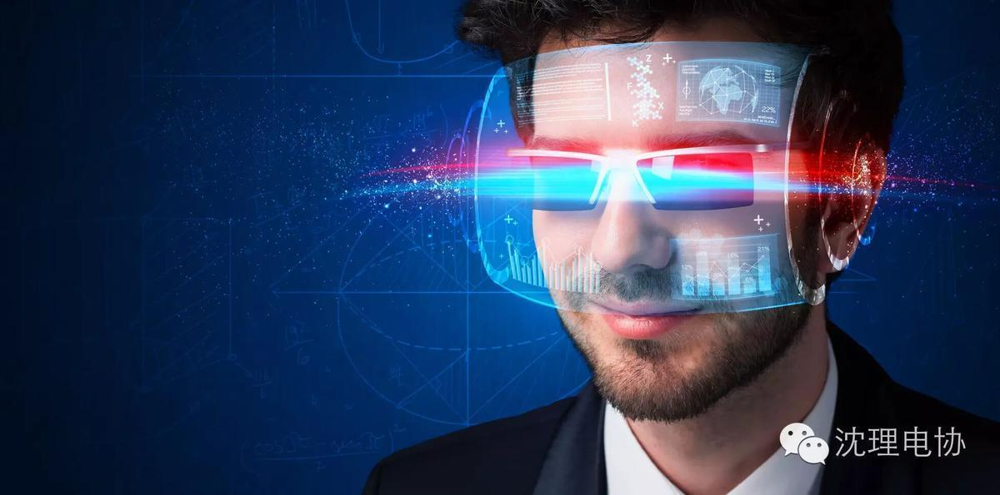
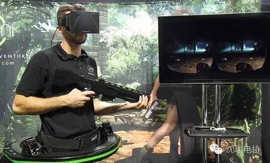
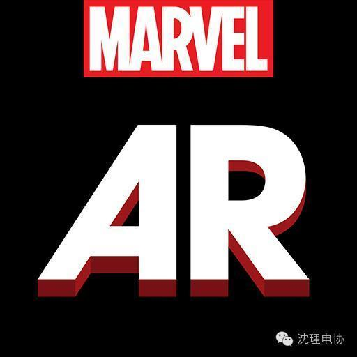
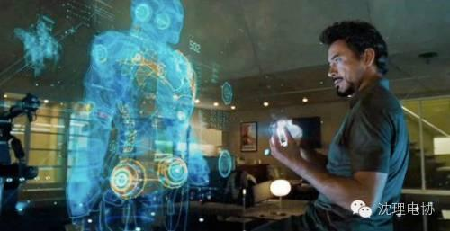

21世纪科技发展迅速，VR（虚拟现实）和AR（增强现实）都是值得关注的新技术，想必大家对VR与AR这两个词已经不陌生了吧，今天就由我来和大家谈谈VR和AR技术。

虚拟现实（Virtual Reality，简称VR）技术是仿真技术的一个重要方向是仿真技术与计算机图形学人机接口技术多媒体技术传感技术网络技术等多种技术的集合是一门富有挑战性的交叉技术前沿学科和研究领域。
虚拟现实技术演变发展史大体上可以分为四个阶段有声形动态的模拟是蕴涵虚拟现实思想的第一阶段（1963）年以前虚拟现实萌芽为第二阶段（1963 -1972 ）虚拟现实概念的产生和理论初步形成为第三阶段（1973 -1989 ）虚拟现实理论进一步的完善和应用为第四阶段（1990 -2004 ）。

VR技术可应用于医学、军事航天、娱乐等领域，这里主要说下游戏方面：丰富的感觉能力与3D显示环境使得VR成为理想的视频游戏工具。由于在娱乐方面对VR的真实感要求不是太高，故近些年来VR在该方面发展最为迅猛。如Chicago（芝加哥）开放了世界上第一台大型可供多人使用的VR娱乐系统，其主题是关于3025年的一场未来战争；英国开发的称为“Virtuality”的VR游戏系统，配有HMD，大大增强了玩家游戏的真实感。

增强现实(Augmented Reality，简称AR)，它是一种将真实世界信息和虚拟世界信息“无缝”集成的新技术，是把原本在现实世界的一定时间空间范围内很难体验到的实体信息(视觉信息,声音,味道,触觉等),通过电脑等科学技术，模拟仿真后再叠加，将虚拟的信息应用到真实世界，被人类感官所感知，从而达到超越现实的感官体验。这项技术有数百种可能的应用，其中游戏和娱乐是最显而易见的应用领域。可以给人们提供即时信息的不需要人们参与任何研究的任何系统，在相当多的领域对所有人都是有价值的。增强现实系统可以立即识别出人们看到的事物，并且检索和显示与该景象相关的数据。还可应用于维修和建设、军事、即使信息等领域。
编辑：关聪
（部分图文来源于网络）